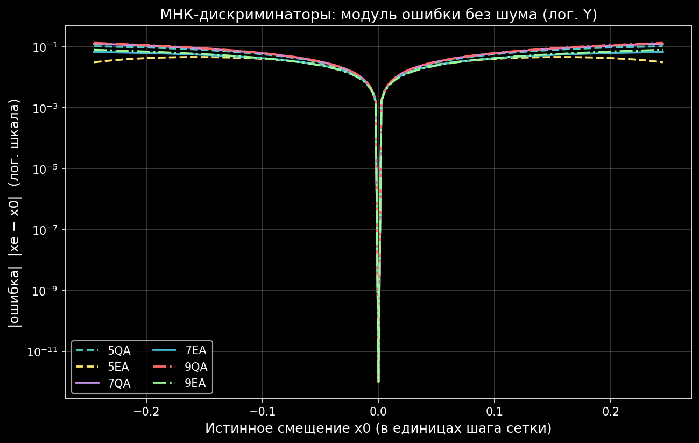

Формулы¶
Полные математические формулы всех 6 методов
Это справочник всех формул дискриминаторов, реализованных в модуле. Для каждого метода — идея, формула, граничные случаи и защитные условия.
1. Центр тяжести (CG)¶
Простейший метод. Координата оценивается как взвешенное среднее.
2-точечный — discr2cg¶
Геометрический смысл: координата центра масс двух точек с «массами» \(A_1, A_2\).
3-точечный — discr3cg¶
N-точечный — discrncg¶
Защита
При \(\sum A_i = 0\) возвращается средняя точка (ERR-005 fix).
2. Суммарно-разностный (SD)¶
Классический моноимпульсный метод — использует отношение разности к сумме. Эта функция есть в радарных моноимпульсных приёмниках.
2-точечный — discr2sd¶
где \(c\) — коэффициент крутизны дискриминаторной характеристики (подбирается под ширину ДН и шаг сетки).
Физический смысл: \(\dfrac{A_2 - A_1}{A_2 + A_1}\) — нормированная разность, пропорциональная отклонению цели от середины.
3. Квадратичная аппроксимация (QA)¶
Через 3 точки проводится парабола \(y = ax^2 + bx + c\), находится её вершина.
3-точечный — discr3qa¶
Граничные случаи (ERR-004 fix, DBL_EPSILON)¶
Условие |
Результат |
|---|---|
\(A_1 = A_2 = A_3\) |
\(x_e = x_2\) (центр) |
\(A_2 = A_3,\ A_1 > A_2\) |
\(x_e = x_1\) |
\(A_2 = A_3,\ A_1 < A_2\) |
\(x_e = (x_2 + x_3)/2\) |
\(A_1 = A_2,\ A_3 > A_2\) |
\(x_e = x_3\) |
\(A_1 = A_2,\ A_3 < A_2\) |
\(x_e = (x_1 + x_2)/2\) |
4. Экспоненциальная аппроксимация (EA)¶
Наиболее точный 3-точечный метод. Моделирует ДН/пик функцией Гаусса:
Алгоритм discr3ea¶
Проверка входных данных — все амплитуды > 0, не все равны.
Сортировка по возрастанию координаты \(x\).
Проверка выпуклости — максимум должен быть в центре. При вогнутости →
EXIT_FAILURE.Логарифмирование:
(12)¶\[z_i = \ln(A_i),\quad i=1,2,3\]Задача сводится к параболической аппроксимации в логарифмическом масштабе.
Вершина параболы:
(13)¶\[\alpha = z_1(f_2^2 - f_3^2) + z_2(f_3^2 - f_1^2) + z_3(f_1^2 - f_2^2)\](14)¶\[\beta = z_1(f_2 - f_3) + z_2(f_3 - f_1) + z_3(f_1 - f_2)\](15)¶\[x_e = \frac{\alpha}{2\beta}\]Ограничение на вылет:
(16)¶\[f_1 - \frac{f_3 - f_1}{2} \leq x_e \leq f_3 + \frac{f_3 - f_1}{2}\]
Уточнение амплитуды discr3eaY¶
5. МНК-парабола по 5 точкам (5QA)¶
Идея: вместо параболы, идеально проходящей через 3 точки, аппроксимируем параболой 5 точек по методу наименьших квадратов. Получаем переопределённую систему — 5 уравнений на 3 неизвестных \((a, b, c)\):
В матричной форме:
МНК-решение через нормальные уравнения:
Замкнутая формула для \(x_i = \{-2,-1,0,1,2\}\)¶
Для равномерной сетки матрица \(\mathbf{H}^{\!\top}\mathbf{H}\) блочно-диагональна (сумма нечётных степеней равна нулю), и решение можно выписать в замкнутом виде:
где \(h\) — шаг сетки, \(x_3\) — центральная точка.
Свойства:
Сложность: \(\mathcal{O}(1)\) — 6 умножений + 7 сложений + 1 деление.
Не требует никаких циклов и матричных вычислений.
В нормальной зоне даёт ошибку ~2× меньше, чем 3-точечная QA.

Рис. 5 Слева — форма пика sinc vs Hanning. Справа — как парабола
ложится на Hanning kernel: ошибка <2.5% в пределах ±0.7 бина.¶
Защита
При \(|a| < 10^{-30}\) возвращается \(x_e = x_3\) — данные плоские, оценить нельзя.
6. МНК-Гауссиан по 5 точкам (5EA) ★¶
Самый точный из реализованных методов. Аппроксимирует пик гауссианом (колоколом) методом наименьших квадратов:
Алгоритм¶
Шаг 1. Логарифмирование амплитуд:
В лог-пространстве гауссиан превращается в параболу:
Шаг 2. К массиву \(z_i\) применяем те же замкнутые МНК-формулы, что и в 5QA:
Шаг 3. Вершина параболы → оценка \(x_e\):
Когда не работает¶
Метод требует строго положительных амплитуд: \(A_i > 0\). Иначе \(\ln A_i\) не определён.
Стратегия fallback в боевом коде:
int ok = discr5ea(A, x, &xe);
if (ok != 0) {
// что-то ≤ 0 или результат за границей
discr5qa(A, x, &xe); // ← переходим на 5QA по амплитудам
}
Почему именно Гауссиан¶
Главное наблюдение проекта: после применения окна Hanning и FFT форма одиночного спектрального пика (Hanning kernel) очень близка к гауссиану в пределах главного лепестка. Поэтому модель \(y \approx A_{\max}\exp(-a(x-x_0)^2)\) является физически обоснованной для типичного FFT-пайплайна.
7. Сравнение всех методов¶

Рис. 6 Монте-Карло сравнение при разных SNR (105 000 испытаний).¶
Таблица сравнения¶
Метод |
Точек |
Bias (без шума) |
Шумоустойчивость |
Сложность |
Требования |
|---|---|---|---|---|---|
CG |
2…N |
~0.17 шага |
низкая |
\(\mathcal{O}(N)\) |
\(\sum A_i \neq 0\) |
SD |
2 |
~0.10 шага |
средняя |
\(\mathcal{O}(1)\) |
подобрать \(c\) |
QA |
3 |
~0.01 шага |
средняя |
\(\mathcal{O}(1)\) |
\(A_i\) любые |
EA |
3 |
~0.005 шага |
средняя |
\(\mathcal{O}(1)\) |
\(A_i > 0\) |
5QA |
5 |
~0.005 шага |
высокая |
\(\mathcal{O}(1)\) |
\(A_i\) любые |
5EA ★ |
5 |
~0.003 шага |
высокая |
\(\mathcal{O}(1)\) |
\(A_i > 0\) |
Вердикт Монте-Карло (Hanning kernel, zp×2, 105 000 испытаний)¶
SNR (дБ) |
Выигрыш лучшего 5pt относительно EA3 |
|---|---|
40 (идеал) |
\(\times 1.4\) |
30 (отлично) |
\(\times 1.8\) |
25 (хорошо) |
\(\times 2.0\) |
20 (норма) |
\(\times 2.0\) |
15 (шумно) |
\(\times 1.7\) |
10 (плохо) |
\(\times 1.2\) |
5 (ужас) |
\(\times 1.2\) |
5pt-методы стабильно выигрывают в 1.2–2.0 раза при любом уровне шума.
{kind=link}

Рис. 7 МНК 5/7/9 без шума: EA-кривые в ~10× ниже QA-кривых.¶
8. Обёртка discr3() — коэффициент пересчёта¶
Для обёрток discr3() и discr3_() координаты пересчитываются:
где \(dx\) — шаг антенной решётки, \(\lambda\) — длина волны.
Координаты масштабируются \(x' = x \cdot c\), а оценка возвращается в исходных единицах: \(x_e = x'_e / c\).
ERR-003 fix
После рефакторинга входные массивы не модифицируются — координаты умножаются на \(c\) при передаче в дискриминатор, а не в самом массиве.
Дальше¶
Сравнение методов — сравнительный обзор методов с графиками
Рекомендации — итоговые рекомендации
Визуальный разбор — визуальный разбор
C API Reference — справочник C API